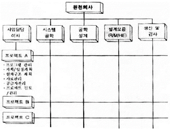
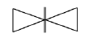
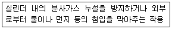
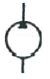
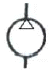
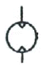
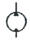

설비보전기사(구) (2011-10-02 기출문제)
1과목: 설비 진단 및 계측
1. 미스얼라이인먼트(misalignment)에 관한 설명으로 틀린 것은?
- 보통 회전주파수의2f(3f)의 특성으로 나타난다.
- 커플링 등으로 연결된 축의 회전 중심선(축심)이 어긋난 상태로서 일반적으로는 정비 후에 발생하는 경우가 많다.
- 축 방향에 센서를 설치하여 측정되므로 축진동의 위상각은 180°가 된다.
- 진동 파형이 항상 비주기성을 갖는다.
(정답률: 74%)

2. 고유진동 주파수와 질량 및 강성에 관한 설명이다. 이 중 옳은 것은?
- 고유 진동 주파수는 질량과 강성에 모두 비례한다.
- 고유 진동 주파수는 질량과 강성에 모두 반비례한다.
- 고유 진동 주파수는 질량에 비례하고 강성에 반비례한다.
- 고유 진동 주파수는 질량에 반비례하고 강성에 비례한다.
(정답률: 69%)
3. 측정하려고 하는 전압원에 계측기를 접속하면, 전압원의 내부 저항으로 실제 전압보다 낮은 전압이 측정되는 현상을 무엇이라고 하는가?
- 표피효과
- 제어백효과
- 압전효과
- 부하효과
(정답률: 58%)
4. 압력센서의 종류와 관련이 없는 것은?
- 브로동관
- 벨로우즈
- 반도체 압력센서
- 도플러 레이다
(정답률: 80%)
5. 소음과 진동에 대하여 올바르게 설명한 것은?
- 소음 주파수와 진동주파수는 같은 물리량으로 1분 동안의 사이클 수를 말하며, Hz로 나타낸다.
- 진동주파수는 진동주기와 비례한다.
- 소음과 진동은 상호교환이 불가능하여 본질적으로 물리적 성질이 다르다.
- 정상적인 청력을 가진 사람의 소음 가청주파수는 20Hz에서 20000Hz 범위이다.
(정답률: 68%)
6. 진동수 f, 변위진폭의 최대치A의 정현진동에 있어서 속도 진폭은 얼마인가?
- 2πfA2
- (2π)2fA
- (2πf)2A
- 2πfA
(정답률: 65%)
7. 진동폭의 ISO 단위에서 틀린 것은?
- 변위(m), 속도(m/s), 가속도(m/s2)
- 변위(mm), 속도(mm/s), 가속도(m/s2)
- 변위(㎛), 속도(m/s), 가속도(m/s2)
- 변위(㎛), 속도(m/s2), 가속도(m/s)
(정답률: 82%)
8. 소음 방지법 중 차음에 관련된 내용으로 잘못 된 것은?
- 차음벽이 공진하는 경우에는 공진주파수의 소음은 거의 그대로 투과한다.
- 차음벽의 무게와 내부 댐핑은 저주파소음의 방지에 영향이 크다.
- 100Hz 이상의 경우 판넬의 고유 진동수와의 관계로 공진이 발생될 수 있어 주의한다.
- 중공 이중벽의 경우 투과손실은 저음역에서 공명투과 손실이 발생하므로 공기층 내에 유리면 등을 충진하면 투과손실이 개선된다.
(정답률: 50%)
9. 음의 진행 방향에 수직하는 단위 면적을 단위 시간에 통과하는 음의 에너지를 무엇이라고 하는가?
- 음압
- 음의 세기
- 음의 출력
- 음의 지향성
(정답률: 79%)
10. 측정대상 신호의 최대 주파수가 fmax이다. 나이퀴스트 샘풀링 이론(Nyquist sampling theorem)에 의하면 에리에싱(Aliasing)의 영향을 저거하기 위한 샘플링(Sampling)시간 Δt은?
- Δt ≤ 2fmax
- Δt ≥ 2fmax
- Δt ≤ 1/(2fmax)
- Δt ≥ 1/(2fmax)
(정답률: 70%)
11. 전류 검출용 센서 중 변류기 방식에 대한 특성으로 올바른 설명이 아닌 것은?
- 피측정 전로에 대한 절연이 가능하다.
- 직류 검출은 불가능하다.
- 주파수 특성상 오차가 크다.
- 측정 저항 손실이 크다.
(정답률: 46%)
12. 간이진단 기술로 분류되지 아니하는 것은?
- 점검원이 수행하는 점검기술
- 운전자에 의한 설비감시 기술
- 사람 접근이 가능한 설비를 대상으로 하는 점검기술
- 설비의 결함 진전을 예측하는 예측기술
(정답률: 79%)
13. 기어에서 발생하는 진동에 대한 설명이다. 이 중 옳지 않은 것은?
- 기어 진동은 두 기어가 맞물릴 때 발생하며 잇수가 많을수록 진동주파수는 높다.
- 두 기어의 축에서 축 정렬 불량이 발생하면 2배, 혹은 3배의 기어 맞물림 주파수가 발생한다.
- 기어 맞물림 주파수가 기어의 고유진동수와 일치하면 높은 양의 진동이 발생한다.
- 기어의 잇빨이 파손되었을 경우에는 정현파의 높은 진동이 발생한다.
(정답률: 61%)
14. 삼각대에 마이크로폰을 부착하고 본체(소음계)와 분리 사용할 경우 본체와 마이크로폰의 이격 거리는?
- 0,5m이상
- 1.0m 이상
- 1.5m 이상
- 2.0m이상
(정답률: 82%)
15. 마스킹(Masking)효과에 대한 설명이다. 이중 옳지 않은 것은?
- 마스킹 효과는 음파의 간섭에 의해서 발생한다.
- 고음이 저음을 잘 마스킹 한다.
- 두음의 주파수가 같은 때에는 맥동이 생겨 마스킹 효과가 감소한다.
- 마스킹 효과란 크고 작은 두 개의 소리를 동시에 들을 때, 큰 소리만 듣고 작은 소리는 듣지 못하는 현상을 말한다.
(정답률: 83%)
16. 하중을 변위 또는 토크를 각변위로 변환하는 경우 널리 쓰이는 변환기는?
- 벨로우즈
- 바이메탈
- 스프링
- 부르동관
(정답률: 64%)
17. 회전수를 측정하기 위한 방법이 아닌 것은?
- 반사 테이프를 이용한 광학 측정법
- 회전주기를 측정하고 역수로 회전수를 구하는 측정법
- 자속 밀도의 변화를 이용한 전자식 측정법
- 초음파를 이용한 측정법
(정답률: 82%)
18. 실용적으로 폭넓게 사용되는 설비진단 기법이 아닌 것은?
- 진동법
- 오일 분석법
- 응력법
- 유도분석법
(정답률: 64%)
19. 진동 차단에 이용되는 재료가 아닌 것은?
- 패드
- 고무
- 콘크리트
- 스프링
(정답률: 85%)
20. 유체의 흐름 속에 날개가 있는 회전자를 설치해서 그 회전수를 검출해서 유량을 구하는 유량계는?
- 터빈식 유량계
- 와류식 유량계
- 용적식 유량계
- 면적식 유량계
(정답률: 76%)
2과목: 설비관리
21. TPM의 다섯 가지 활동이 아닌 것은?
- 설비의 효율화를 위한 개선 활동
- 설비에 관계하는 사람이 빠짐없이 참가
- 최고 경영층으로부터 제일선 까지 전원 참가
- 자주적 대집단 활동을 통해 PM 추진
(정답률: 75%)
22. 공사 관리에서 활동시간을 추정 시에 가정하는 분포는?
- 정규분포
- 지수분포
- 포아송 분포
- 베타분포
(정답률: 55%)
23. 대량생산을 위한 공장자동화와 같이 기계화도가 높은 생산 공정에 제조 간접비를 배부하는 방식은?
- 직접노무시간법
- 직접재료비법
- 직접제조비법
- 기계가동 시간법
(정답률: 70%)
24. 다음은 설비관리 조직 중에서 어떤 형태의 조직인가?

- 기능중심 매트릭스 조직
- 제품중심 매트릭스 조직
- 설계 보증 조직
- 제품중심 조직
(정답률: 56%)
25. 품질보전의 전개순서로 적절한 것은?
- 현상분석→목표설정→표준화→요인대책→검토→실시→결과확인
- 현상분석→목표설정→요인해석→검토→실시→결과확인→표준화
- 현상분석→목표설정→표준화→검토→요인해석→실시→결과확인
- 현상분석→요인회석→검토→실시→표준화→목표설정→결과확인
(정답률: 76%)
26. 설비관리 업무의 요원 대책이 아닌 것은?
- 최고의 부하를 없앤다.
- OSR(on stream repair) 은 위험하기 때문에 피한다.
- OSI(on stream inspection)는 피크를 피하고자 하는 것이다.
- 유닛 방식을 최대한 활용한다.
(정답률: 69%)
27. 설비보전효과를 측정하는 식으로 옳지 않은 것은?(오류 신고가 접수된 문제입니다. 반드시 정답과 해설을 확인하시기 바랍니다.)
- 평균가동시간 = 가동시간 ÷ 고장횟수
- 설비가동률 = (가동시간 ÷ 부하시간) × 100
- 고장강도율 = (고장정지시간 ÷ 부하시간 ) × 100
- 생산 Lead Time 개선 = (개선 Lead Time ÷ 이론 Lead Time) × 100
(정답률: 58%)
28. 현상파악에 사용되는 수법 중 공정이 정상 상태인지 이상상태인지를 판독하기 위한 수법은 다음 중 어느 것인가?
- 체크시트
- 관리도
- 히스토그램
- 파레토도
(정답률: 64%)
29. 선반용 바이트, 밀링용 커터, 호빙머신용 호브 등은 무슨 공구인가?
- 연삭공구
- 절삭공구
- 형(die)
- 치구
(정답률: 82%)
30. 계측작업 및 방법의 관리와 합리화를 위한 방법과 거리가 먼 것은?
- 계측 작업의 표준화
- 안전관리의 향상
- 사용 취급의 적정화
- 계측 정밀도의 유지 향상
(정답률: 73%)
31. 보전효과 측정을 위한 Dupont(드퐁사) 방식에서 보전 효과를 나타내는 기본 기능이 아닌 것은?
- 계획 (Planning)
- 작업량 (Work load)
- 보전성(Maintenability)
- 생산성 (Productivity)
(정답률: 50%)
32. 성능 가동률을 표현한 것이 아닌 것은?
- 실질가동률 x 속도가동률
- 가동시간 x 성능가동률
- 이론생산시간 /가동시간
- (생산량 x 이론주기시간)/가동시간
(정답률: 47%)
33. 설비나 시스템의 효율을 극대화하기 위한 개별 개선 활동에서 가장 첫 번째로 수행하는 것은?
- 로스의 정량성 측정
- 개선안 수립
- 로스의 영향 분석
- 중점 설비 선정
(정답률: 76%)
34. 공장설비의 기계화, 자동화에 대한 설비관리 대책으로 옳지 않는 것은?
- 메카트로닉스화 설비요원의 양성
- 자동화 기계를 현장에 맞게 개량
- 기계설비는 전문업체에 맡겨 유지관리
- 분임조 활동으로 개선활동 추진
(정답률: 79%)
35. 설비관리를 위한 경영활동으로 거리가 먼 것은?
- 보전도 향상
- 설비자산관리
- 작업환경관리
- 생산보전활동
(정답률: 62%)
36. 설비의 열화 원인에서 사용열화에 속하지 않는 것은?
- 온도, 압력, 회전에 의한 마모
- 설비 기능과 재질, 원료 부착에 의한 열화
- 취급, 오조작에 의한 열화
- 녹, 먼지, 노후화에 의한 열화
(정답률: 68%)
37. 다음 설명 중 맞지 않는 것은?
- 공정별 배치는 표준화가 어려운 다품종 소량 생산에 알맞은 배치형식이다.
- 제품별 배치는 계획생산, 시장생산에 알맞은 배치 형식이다.
- 총체적 설비 배치계획은 공장입지선정, 건물배치계획, 부서배치계획 및 설비배치계획 단계로 실시된다.
- GT셀(Group Technology Cell)은 제품의 종류에 비해 생산량이 많은 대량생산라인의 형식에 가깝다.
(정답률: 66%)
38. 설비의 범위를 기능별로 분류한 것 중 틀린 것은?
- 토지, 건물 및 기초
- 건물 부대설비 및 기타 유틸리티 설비
- 사무용기기/ 설비
- 부품 및 물류 시스템
(정답률: 63%)
39. 다음 중 설비의 신뢰성 평가척도가 아닌 것은?
- 고장률
- 설비유효가동율
- 평균고장간격
- 평균고장시간
(정답률: 65%)
40. 열관리의 효율적 운영에 맞지 않는 것은?
- 열관리의 효율을 높이기 위해서는 공장 간부와 일부 관계자만에 의한 집중관리가 필요하다.
- 설비의 열사용 기준을 정해 열효율 향상을 도모해야 한다.
- 열 설비는 가동율 향상을 위한 관리라 중요하다.
- 연료는 가격이 저렴하고 쉽게 확보 할 수 있어야 한다.
(정답률: 82%)
3과목: 기계일반 및 기계보전
41. 공작기계에서 절삭가공 작업 중 발생하는 구성인선을 방지하기 위한 방법으로 틀린 것은?
- 공구의 경사각을 크게 한다.
- 절삭속도를 느리게 한다.
- 윤활성이 좋은 절삭 유제를 사용한다.
- 절삭 깊이를 적게 한다.
(정답률: 62%)
42. 다음에서 펌프의 캐비테이션 방지조건으로 잘못된 것은?
- 유효 NPSH를 필요 NPSH보다 크게 맞춘다.
- 흡입 실양정을 작게 한다.
- 편흡입 펌프를 양 흡입 펌프로 바꾼다.
- 회전수를 낮춘다.
(정답률: 62%)
43. 탭 및 다이스 가공에 대한 설명 중 틀린 것은?
- 보통 탭과 다이스에 의한 작업은 지름이 25cm 정도까지 할 수 있다.
- 탭 작업은 구멍에 암나사를 가공하는 공작법이다.
- 환봉의 바깥쪽에 수나사를 가공할 때 사용하는 공구는 다이스이다.
- 탭은 1-3번 의 3개가 1조로 구성되어 있고, 작업은 번호 순서대로 탭을 사용하여 가공한다.
(정답률: 75%)
44. 스퍼 기어의 제도에서 요목표에 없어도 되는 항목은?
- 기어의 치형
- 기어의 모듈
- 기어의 재질
- 기어의 압력각
(정답률: 73%)
45. 설비의 효율화를 저해하는 6대 로스에 해당되지않는 것은?
- 고장 로스
- 속도저하 로스
- 공정 일시 정지 로스
- 동작 로스
(정답률: 60%)
46. 다음 중 송풍기의 흡입 방법에 의한 분류가 아닌것은?
- 실내대기 흡입형
- 흡입관 취부형
- 풍로 흡입형
- 평 흡입형
(정답률: 56%)
47. 테르밋 용접법의 특징을 설명한 것이다 맞는 것은?
- 용접작업이 복잡하다.
- 용접용기구가 복잡하여 이동이 어렵다.
- 용접작업 후의 변형이 적다
- 전력이 필요하다.
(정답률: 72%)
48. 광범위하고 높은 정밀도의 속도제어가 요구되는 장소에 적합한 전동기의 종류는?
- 유도전동기
- 동기 전동기
- 정류자 전동기
- 직류전동기
(정답률: 52%)
49. 철강의 열처리 중 풀림처리의 목적이 아닌 것은?
- 내부응력을 제거한다.
- 조직을 개선한다.
- 경도를 줄이고 조직을 연화 시킨다.
- 강의 표면을 경화시킨다.
(정답률: 63%)
50. 나사의 종류를 표시하는 기호가 올바르게 표기된 것은?
- 유니파이 보통나사 : UNF
- 미터사다리꼴나사 : Tr
- 미니어쳐 나사 : M
- 후강 전선관나사 : CTC
(정답률: 70%)
51. 기어 감속기의 유지관리를 위한 요점이 아닌 것은?
- 정확한 윤활의유지
- 치면의 마모상태 파악
- 이상의 조기 발견
- 소음이 발생하면 분해하여 기어를 교환
(정답률: 81%)
52. 베어링 체커의 사용에 대한 설명으로 맞는 것은?
- 회전을 정지 시키고 사용한다.
- 그라운드 잭은 지면에 연결한다.
- 동력전달 상태를 알 수 있다.
- 입력 잭을 베어링에서 제일 가까운 곳에 접촉 시킨다.
(정답률: 71%)
53. 유압 실린더가 불규칙하게 움직일 때의 원인과 대책으로 맞지 않는 것은?
- 회로 중에 공기가 있다. - 회로 중에 높은 곳에 공기벤트를 설치하여 공기를 뺀다.
- 실린더의 피스톤 패킹, 로드 패킹 등이 딱딱하다. - 패킹의 채결을 줄인다.
- 실린더의 피스톤과 로드 패킹의 중심이 맞지 않다. - 실린더를 움직여 마찰저항을 측정 중심을 맞춘다.
- 드레인 포트에 배압이 걸려 있다. - 드레인 포트의 압력을 빼어 준다.
(정답률: 47%)
54. 다음 그림의 밸브기호의 명칭으로 맞는 것은?

- 게이트 밸브
- 체크 밸브
- 글로브 밸브
- 버터플라이 밸브
(정답률: 63%)
55. 응력집중에 의한 축의 파단원인으로 볼 수 없는 것은?
- 커플링 중심내기 불량
- 설계형상의 오류
- 축의 가공 불량
- 키 홈의 마모
(정답률: 76%)
56. 보전현장에서 주로 쓰는 공구 중 수기가공 공구가 아닌 것은?
- 스크레이퍼
- 다축 드릴링 머신
- 바이스
- 컴파스
(정답률: 75%)
57. 관은 그 속에 흐르는 유체의 온도 변화에 수축, 팽창을 일으키는데 이러한 관의 신축 장해를 제거하기 위한 신축이음쇠의 종류가 아닌 것은?
- 벨로우즈형(Bellows type)
- 슬리브형(Sleeve type)
- 스위블형(Swivel joint)
- 플랜지형 (Flange type)
(정답률: 60%)
58. 녹에 의한 볼트 너트의 고착을 방지하는 방법으로 틀린 것은?
- 볼트너트를 죈 후 아주 높은 온도로 가열한 후 식힌다.
- 나사틈새에 부식성 물질이 침입하지 않도록 한다.
- 산화연분을 기계유로 반죽한 적색 페인트를 나사부분에 칠한 후 죈다.
- 유성 페인트를 나사부분에 칠한 후 죈다.
(정답률: 78%)
59. 기어를 이용한 동력 전달 시 언더컷에 의해 기어가 파손되는 경우가 많이 발생하는데 언더컷의 설명중 틀린 것은?
- 전위기어를 사용하면 언더컷을 방지할 수 있다.
- 기어의 이 강도는 표준기어가 전위기어보다 크다.
- 표준기어에서는 잇수가 많을 때 언더컷이 일어난다.
- 전위계수가 크면 이 두께가 크게 된다.
(정답률: 54%)
60. 원심식 압축기의 장점에 대한 설명으로 틀린 것은?
- 윤활이 용이하다.
- 압력맥동이 없다.
- 설치면적이 비교적 적다.
- 고압 발생에 적합하다.
(정답률: 71%)
4과목: 윤활관리
61. 그리스의 주도를 측정하는 방법이 아닌 것은?
- 혼화주도
- 불혼화 주도
- 고형주도
- 증주 주도
(정답률: 62%)
62. 커플링의 기계적 특성은 사용 윤활제의 종류나 윤활 방법과 중요한 관계를 갖고 있다. 모든 기계적 유형의 커플링 윤활제 선택 조건에서 적합하지 않는 것은?
- 커플링을 위한 윤활제는 온도와 하중을 고려하여 선택되어야 한다.
- 유동성이 최고 예상 온도에서도 반드시 유지 되어야 한다.
- EP오일은 매우 낮은 온도에서 요구되는 저점도용으로도 사용 될 수 있다.
- 지나친 어긋남과 고속의 상태에서는 저온에서 저점도 오일이 요구되며 고온 상태에서는 점도의 감소 현상이 일어난다.
(정답률: 37%)
63. 그리스의 급지(급유)에 관한 내용으로 틀린 것은?
- 그리스의 충전량이 너무 많으면 마찰 손실이 크며, 온도 상승의 원인이 된다.
- 베어링의 경우 그리스의 일반적인 충전량은 베어링 내부공간의 3/4이 적당하다.
- 그리스를 교체할 때는 전에 사용하던 그리스를 완전히 제거하고 깨끗이 청소하여야 한다.
- 그리스 건을 사용하므로 마찰면에서 급유에 대한 신뢰성을 높일 수 있다.
(정답률: 70%)
64. 급유방법별 적정 유면 관리기준으로서 적절하지 못한 것은?
- 가시적하 : 오일용기의 높이 1/3~2/3
- 체인급유 : 체인의 최하부가 충분히 젖는 높이
- 링 급유 : 링 바깥지름 밑에서 1/3~2/3
- 유욕급유 : 기계별로 정해진 계기의 적정유면
(정답률: 58%)
65. 베어링 윤활에서 일반적으로 고려할 사항과 거리가 먼 것은?
- 운전속도
- 하중
- 침전가
- 적정점도
(정답률: 67%)
66. 유막형성이 어려워 윤활관리에 특히 유의하여야 하는 기어로 맞는 것은?
- 베벨기어
- 스퍼어기어
- 웜기어
- 헬리컬기어
(정답률: 60%)
67. 윤활고장 발생원인 중에는 윤활제면, 마찰면, 작업면, 급유방법면, 환경면 등의 고장원인이 있는데, 작업면의 고장원인이 아닌 것은?
- 급유작업의 부주의
- 과잉의 급유 또는 과소한 급유
- 급유기간이 너무 느리거나 빠름
- 성질이 다른 윤활제와의 혼합
(정답률: 55%)
68. 윤활관리의 목적에 해당하지 않는 것은?
- 재료비감소
- 유종통일을 통한 생산성 향상
- 동력비 절감
- 윤활제의 반입과 반출의 합리적 관리
(정답률: 43%)
69. NAS 10등급은 입경 5~15㎛ 기준으로 이물질이 몇 개 이어야 하는가?
- 6000개 초과 32000개 이하
- 32000개 초과 64000개 이하
- 6400개 초과 12800개 이하
- 128000개 초과 256000개 이하
(정답률: 62%)
70. 오일의 열에 대한 안정성을 확인하는 시험으로 맞는 것은?
- 유동점
- 중화가
- 산화안정성
- 점도지수
(정답률: 45%)
71. 윤활유의 수명은 산화 및 이물질의 혼입에 따라 정해진다. 윤활유의 산화속도와 관계가 없는 것은?
- 온도
- 존재하는 촉매
- 공기와의 접촉 윤활유의 종류
- 유동점 강하제 무첨가의 경우
(정답률: 61%)
72. 윤활유의 기유로 사용되는 파라핀계 기유를 설명한 것이다. 틀린 것은?
- 점도지수가 나프텐계 기유보다 낮다.
- 산화저항성이 나프텐계 기유보다 높다.
- 아닐린 점이 나프텐계 기유보다 높다.
- 인화점, 유동점이 나프텐계 기유보다 높다.
(정답률: 58%)
73. 윤활관리를 실시함에 있어서 현장에서 사용하는 윤활관리 카드에 기록하여야 할 내용으로 적당하지 않은 것은?
- 제작국 및 도입가격
- 모델명 및 윤활 개소별 윤활제의 종류
- 급유방법 및 급유량
- 설치 공장명 및 설비번호
(정답률: 77%)
74. 미끄럼 베어링의 그리스 윤활을 위한 그리스의 선정 기준으로서 고려해야 할 사항이 아닌 것은?
- 사용 온도에 적당한 주도를 가진 그리스를 선정한다.
- 일반적으로 2m/sec 이하에 적당하다.
- 급유방법으로서 급유하기에 용이한 주도의 그리스를 선택한다.
- 저하중인 경우 EP급 그리스를 반드시 선정한다.
(정답률: 71%)
75. 다음은 윤활유의 기능 중 무엇에 대한 설명인가?

- 감마작용
- 밀봉작용
- 방청작용
- 세정작용
(정답률: 76%)
76. 윤활관리의 조직에서 윤활 실시 부문을 윤활담당자와 급유원으로 구분할 때 윤활담당자의 직무에 해당되지 않는 것은?
- 표준적 유량 결정 및 윤활작업 예정표 작성
- 윤활대장 및 각종 기록 작성 보고
- 급유장치 관계의 예비품 수배
- 윤활제의 육안 검사 및 간단한 윤활제 교환
(정답률: 65%)
77. 일반작동유(일반기계)의 일반적인 관리한계(교환기준)로 틀린 것은?
- 수분 : 0.5%(용량) 이하
- 전산가(신유대비증가) : 0.5mgKOH/g 이하
- n-펜탄불용분 : 0.⑤%(무게) 이하
- 동점도의 변화 : 신유의 ±15% 이내
(정답률: 66%)
78. 그리스의 기유에 대한 특유의 요구 성질 중 틀린것은?
- 적당한 점도 측성을 가질 것
- 증발온도가 낮을 것
- Oil Seal 등에 영향이 없을 것
- 증주제와 친화력이 좋을 것
(정답률: 64%)
79. 마찰면의 상태에 따라 분류한 마찰의 종류가 아닌것은?
- 고체마찰(solid friction)
- 경계마찰(boundary friction)
- 미끄럼마찰(sliding friction)
- 유체마찰(fluid friction)
(정답률: 49%)
80. 압축기의 실린더 내부 윤활에 사용되는 윤활유의 요구 성능이 아닌 것은?
- 열, 산화 안정성이 양호할 것
- 적정 점도를 가질 것
- 생성탄소가 경질이고 부착성이 좋을 것
- 금속 표면에 대한 부착성이 좋을 것
(정답률: 67%)
5과목: 공유압 및 자동화
81. 릴리프밸브와 감압 밸브의 특징 비교 중 옳지 않은 것은?
- 릴리프 밸브는 유압회로 전체 압력을 설정하고 감압밸브는 부분압력을 설정한다.
- 릴리프밸브는 안전밸브 기능을 하고 감압밸브는 압력유지 기능을 한다.
- 릴리프밸브는 설정 압력을 초과하면 개방되고 감압밸브는 설정압보다 높아지면 유로가 닫힌다.
- 릴리프밸브는 유압회로의 출구측 압력을 조정하고 감압 밸브는 입구측 압력을 조정한다.
(정답률: 61%)
82. 오리피스(orifice)에 대한 설명이다. 맞는 것은?
- 길이가 단면치수에 비해 비교적 빈 교축이다.
- 유체의 압력강하는 교축부를 통과하는 유체 점도의 영향을 거의 받지 않는다.
- 유체의 압력강하는 교축부를 통과하는 유체 온도에 따라 크게 영향을 받는다.
- 유체의 압력강하는 교축부를 통과하는 유체점도에 따라 크게 영향을 받는다.
(정답률: 56%)
83. 공기압축기의 종류가 아닌 것은?
- 왕복 피스톤 압축기
- 트로코이드형 압축기
- 스쿠루형 압축기
- 터보형 압축기
(정답률: 56%)
84. 다음 중 케이블 절연 진단 방법이 아닌 것은?
- 교류 전류 시험
- 부분방전 시험
- 내전압 시험
- 연동 시험
(정답률: 65%)
85. 다음 기호 중에서 공기압 모터를 나타낸 것은?




(정답률: 65%)
86. 유공압의 특징으로 옳은 것은?
- 순간역전운동이 불가능하다.
- 무단변속제어가 가능하다.
- 유지보수나 작동이 복잡하다.
- 과부하에 대한 안전장치가 반드시 필요하다.
(정답률: 58%)
87. 전기 타임 릴레이의 구성요소 중 공압의 체크밸브와 같은 기능을 가지고 있는 것은?
- 가변저항
- 접점
- 캐패시터
- 다이오드
(정답률: 71%)
88. 자동화시스템으로 구성된 자동화 설비의 보전 목적은 가동률 향상에 있다. 다음 중 설비의 가동률 저하에 가장 큰 영향을 미치는 것은?
- 설비의 고장정지에 의한 가동중지
- 설비의 자동화 방식에 따른 효율
- 설비의 제어방식에 따른 연산처리
- 설비의 작업조건에 따른 운전특성
(정답률: 74%)
89. 유압펌프 중 트로코이드(Trochoid)펌프에 대한 설명으로 맞는 것은?
- 폐입현상이 크게 발생된다.
- 초생달 모양의 스페이서가 있다.
- 내측기어보다 외측기어의 이의수가 1개가 많다.
- 고속 초고압용으로 적합하다.
(정답률: 70%)
90. 센서의 종류 중 용도에 따른 분류에 속하지 않은 센서는?
- 제어용 센서
- 감시용 센서
- 검사용 센서
- 광학적 센서
(정답률: 65%)
91. 자동화 시스템의 5대 요소에 속한 것이 아닌 것은?
- 센서
- 프로세서
- 액추에이터
- 하드웨어
(정답률: 65%)
92. 유도기전력을 설명한 것으로 틀린 것은?
- 도선이 움직이는 속도에 비례한다.
- 자속 밀도에 비례한다.
- 도선의 길이에 비례한다.
- 도체를 자속과 평행으로 움직이면 기전력이 발생한다.
(정답률: 62%)
93. 압축 공기 중에 포함되어 있는 수분을 제거하기 위한 건조기의 종류가 아닌 것은?
- 수냉식 건조기
- 흡수식 건조기
- 흡착식 건조기
- 냉동식 건조기
(정답률: 61%)
94. 공압밸브에 대한 설명 중 옳지 않은 것은?
- 2개의 입력 공기 중 압력이 높은 공압신호만 출력되는 밸브를 셔틀밸브라고 한다.
- 셔틀밸브에서 2개의 공압신호가 동시에 입력되면 압력이 낮은 쪽이 먼저 출력된다.
- 2개의 압축공기가 입력되어야만 출구로 압축공기가 흐르는 밸브를 2압밸브라고 한다.
- 2압 밸브는 안전제어, 검사 기능 등에 사용된다.
(정답률: 68%)
95. 유압시스템에서 축압기(Accumulator)의 사용 목적으로 적합하지 않는 것은?
- 에너지 보조원으로 사용하는 경우
- 충격 압력을 흡수하는 경우
- 맥동 흡수용으로 사용하는 경우
- 압력 증대용으로 사용하는 경우
(정답률: 61%)
96. 다음 중 국제 단위계(SI 단위)의 기본단위(Baseunit)에 속하지 않는 것은?
- ℃
- m
- mol
- cd
(정답률: 72%)
97. 공압모터의 사용상 주의 점과 거리가 먼 것은?
- 고속 회전 및 저온에서의 사용 시 결빙에 주의한다.
- 배관 및 밸브는 될 수 있는 한 유효 단면적이 큰 것을 사용한다.
- 모터의 진동 소음문제로 밸브는 가급적 모터에서 먼 곳에 설치한다.
- 윤활기를 반드시 사용하고 윤활유 공급이 중단 되어도 소손되지 않도록 한다.
(정답률: 66%)
98. 220bar 이상의 고압에 주로 이용되는 펌프는?
- 베인펌프
- 피스톤 펌프
- 기어펌프
- 나사 펌프
(정답률: 66%)
99. 노즐 플래퍼형 서보 유압밸브에서 전기신호를 기계적 변위로 바꾸어 주는 역할을 하는 것은?
- 토크모터
- 노즐
- 플래퍼
- 프래퍼 스프링
(정답률: 64%)
100. 서보제어의 의미로 맞는 것은?
- 오픈(open)루프제어
- 증폭제어
- 느린 정밀 제어
- 빠른 폐회로제어
(정답률: 67%)